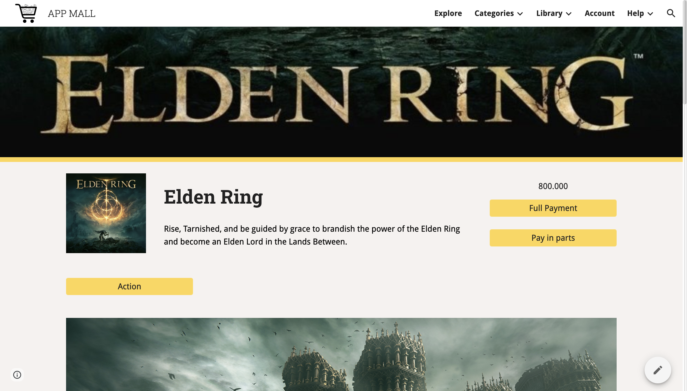

Information technology is rapidly changing that both neophytes and professionals must keep learning and practising in order not to be eliminated and outdated with advanced technology. However, beginners may find it struggling to choose whether software, programming languages, skills are suitable for them and later in their career options. This website can help newcomers have an overview type of IT major, from required skills to the prospect of demandable jobs in the future and teach you how to obtain necessary skills. For instance, what a full-stack engineer would do, what is data science, how different between a software architect and a solution architect, etc.

Also, our website can help users learn by online courses, which they can save time of traveling and be able to review their course again whenever they finish learning. Another advantage is during the Covid-19, streaming online courses prevent the danger of studying face to face in classes by learning in a far distance, which is applied in many countries.